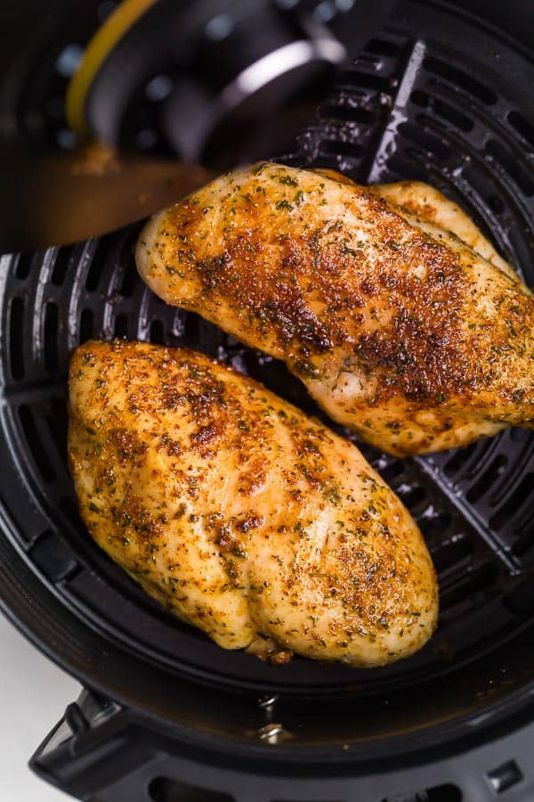

Air Fried Chicken Breast
Quick and juicy chicken breast recipe done in under 20 minutes!
This recipe utilizes the power of an air fryer.
Fry some chicken without the oil!
Ingredients
- One chicken breast (4oz or more)
- 1/2 tbsp salt
- 1/2 tbs black pepper
- 1 tsp onion powder
- 1 tsp garlic powder
- 1 tsp thyme
Steps
- Preheat air fryer to 400°Ft for around 5-10 minutes
- Flatten your chicken breast so it's thinner and cooks, then season
- Spray nonstick cooking spray in air fryer. Spray in a circular motion for 1 second
- Place chicken breast in air fryer, and cook for 8-10 minutes
- Flip chicken breast and cook for an additional 4-6 minutes
Check internal temperature of chicken to ensure it's cooked to 165°F
